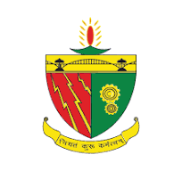

<div class="forum-page">
  <h2 class="forum-heading">📢 Alumni-Student Forum</h2>

  <div class="forum-grid">
    
    <!-- Recent Questions -->
    <div class="forum-card">
      <h3><i class="fas fa-question-circle"></i> Recent Questions</h3>
      <ul>
        <li>How to find tech internships as a fresher?</li>
        <li>What are some must-have skills in 2025?</li>
        <li>Best companies hiring CS grads?</li>
      </ul>
      <button class="forum-btn">View All</button>
    </div>

    <!-- Create New Post -->
    <div class="forum-card create-post">
      <h3><i class="fas fa-pen-nib"></i> Create Post</h3>
      <textarea placeholder="Ask something..."></textarea>
      <button class="forum-btn">Post Now</button>
    </div>

    <!-- Trending Topics -->
   <div class="forum-card" onclick="window.location.href='university_Insights.html'" style="cursor: pointer;">
      <h3><i class="fas fa-fire"></i> University Insights</h3>
      <div class="tags">
       
       <p onclick="window.location.href='university_Insights.html'"> 
<h4>BIT Sindri </h4>A premier government engineering college located in Dhanbad, Jharkhand, 
       affiliated with Jharkhand University of Technology. Established in 1949,
        it is renowned for producing skilled engineers across various disciplines.</p>
      </div>
    </div>

    <!-- Announcements -->
    <div class="forum-card">
      <h3><i class="fas fa-bullhorn"></i> Announcements</h3>
      <ul>
        <li>🔥 Webinar on Career Growth - May 12</li>
        <li>🎓 Alumni Meetup Registration Open</li>
      </ul>
    </div>

    <!-- Top Contributors -->
    <div class="forum-card">
      <h3><i class="fas fa-trophy"></i> Top Contributors</h3>
      <ol>
        <li>💎 Aryan Patel (25 Posts)</li>
        <li>⚡ Meera Shah (22 Replies)</li>
        <li>🌟 Rahul Dev (15 Solutions)</li>
      </ol>
    </div>

    <!-- Notifications -->
    <div class="forum-card">
      <h3><i class="fas fa-bell"></i> Notifications</h3>
      <ul>
        <li>💬 You have 3 new replies</li>
        <li>📌 Your question was marked as featured</li>
      </ul>
    </div>

  </div>
</div>